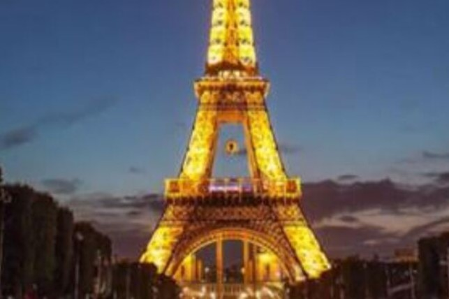
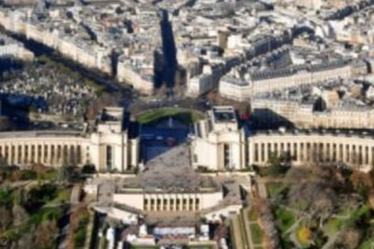
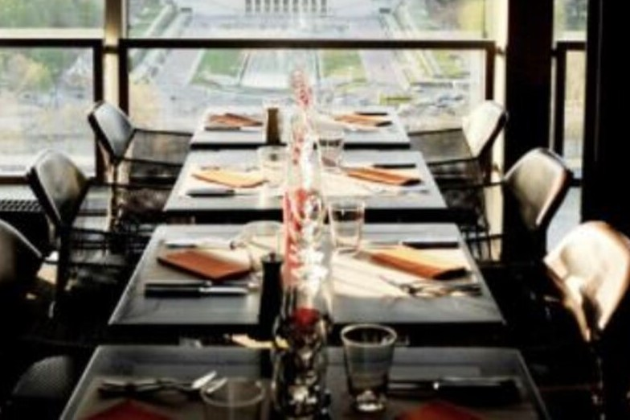
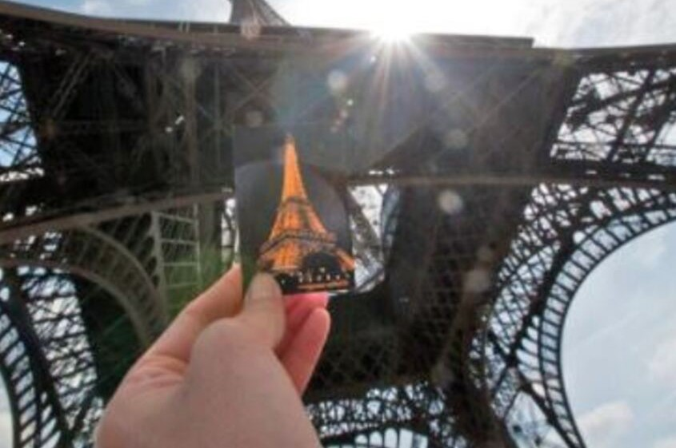

에펠탑
Eiffel Tower
- 
- 
- 
- 
주소
정보
교통
입장료
구경 팁
Champ de Mars, 5 av Anatole France, 7구, 파리, 프랑스
구스타브 에펠이 설계한 파리의 대표적인 건축물이다.
자세히 들여다보면 생선 비늘 같은 아르누보 장식들이 있다.
에펠탑 입구는 파리에서 가장 유명한 소매치기 장소이다.
에펠탑 내부로 올라갈 수 있다.
지하철: 메트로 1,2,6호선 Charles de Gaulle Etoile역
어른 : 17유로 | 청년 : 14.50유로 | 어린이 : 8유로
승강기 - 어른 : 11유로 | 청년 : 8.50유로 | 어린이 : 4유로
개선문을 정면으로 바라본 상태에서 대로의 오른쪽을 먼저 훑어본다.
그 후 왼쪽을 둘러보고 루이뷔통 건물 옆의 조르즈 생크거리로 걸어간다.
샹제리제 거리의 고급 부티크와 유명 브랜드 매장을 구경하며 둘러본다.